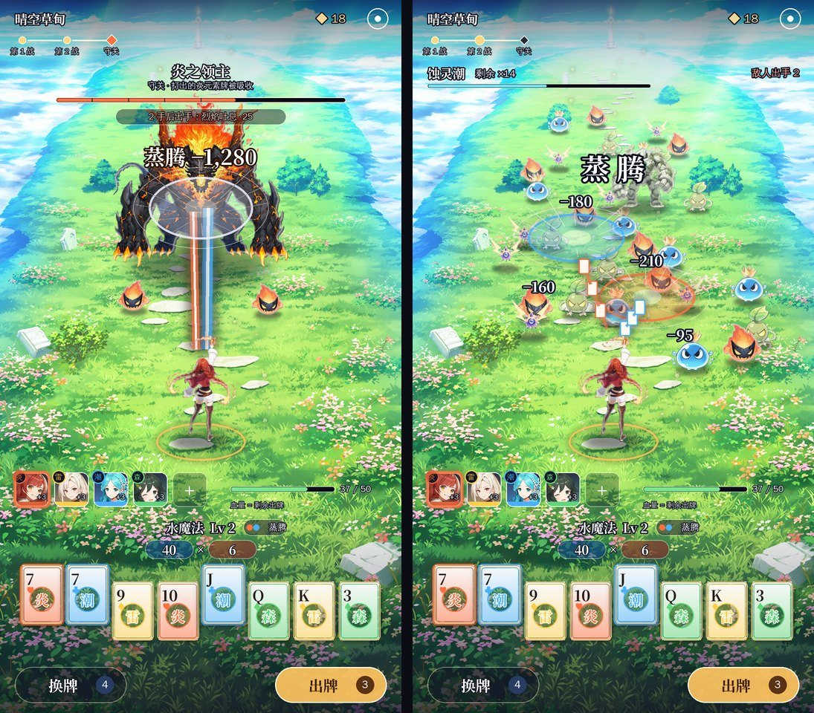
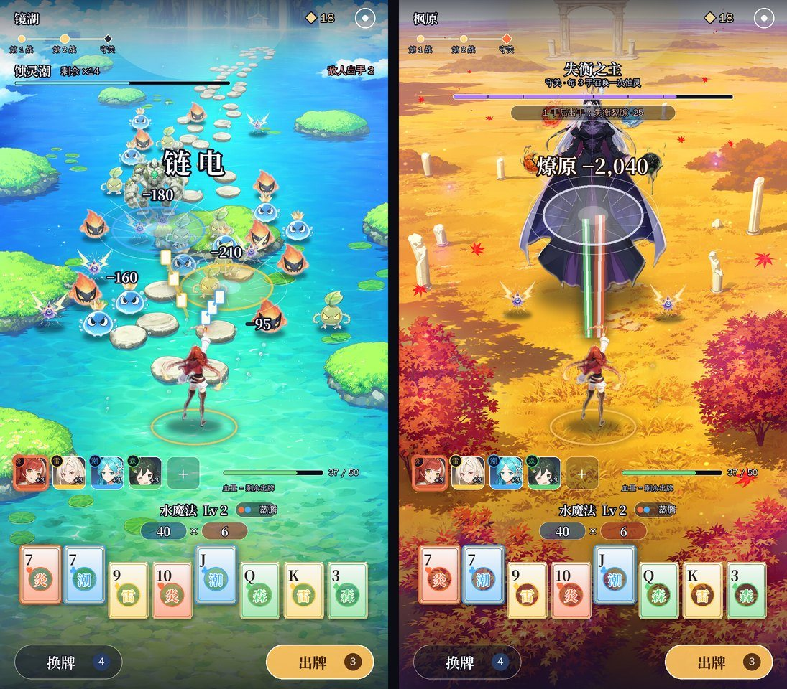
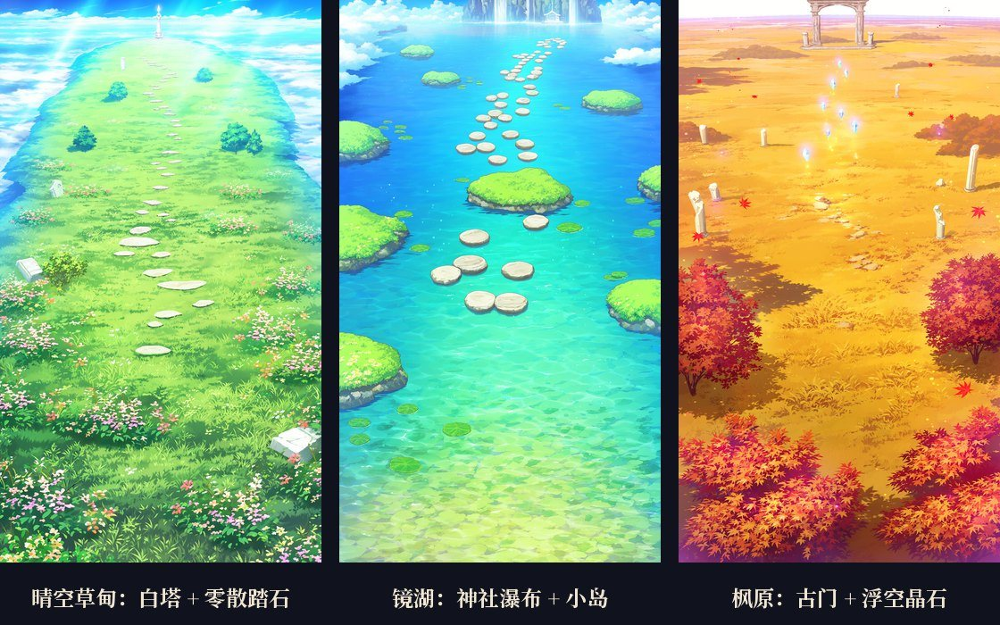
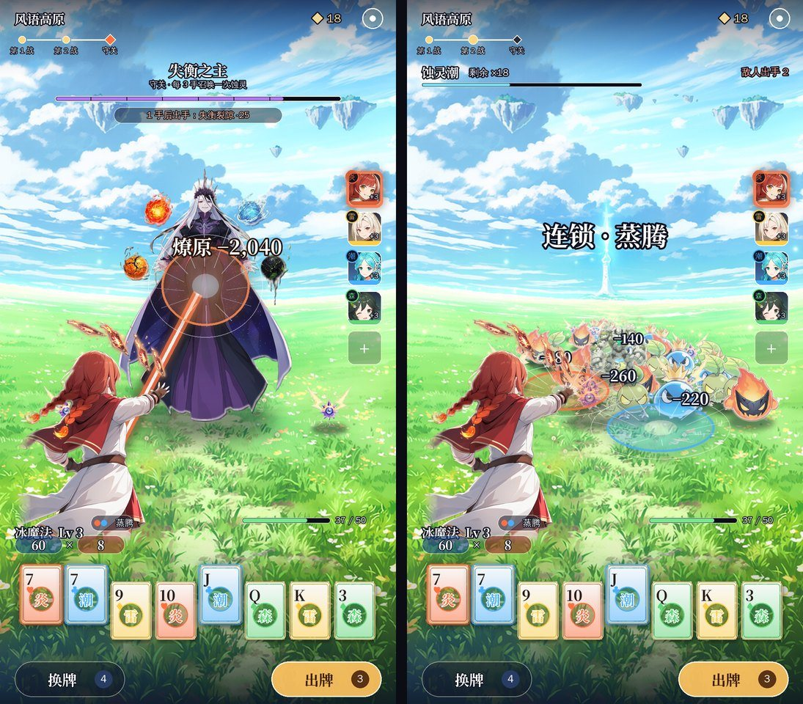
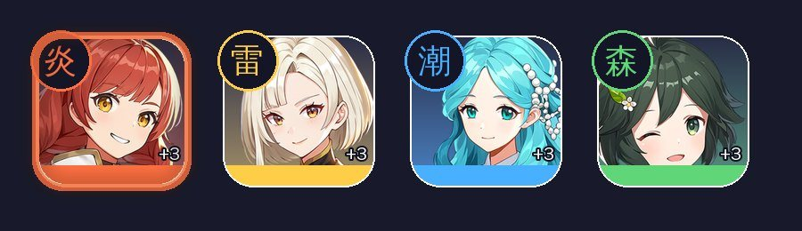
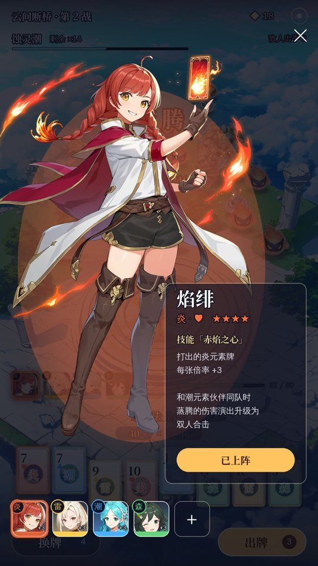
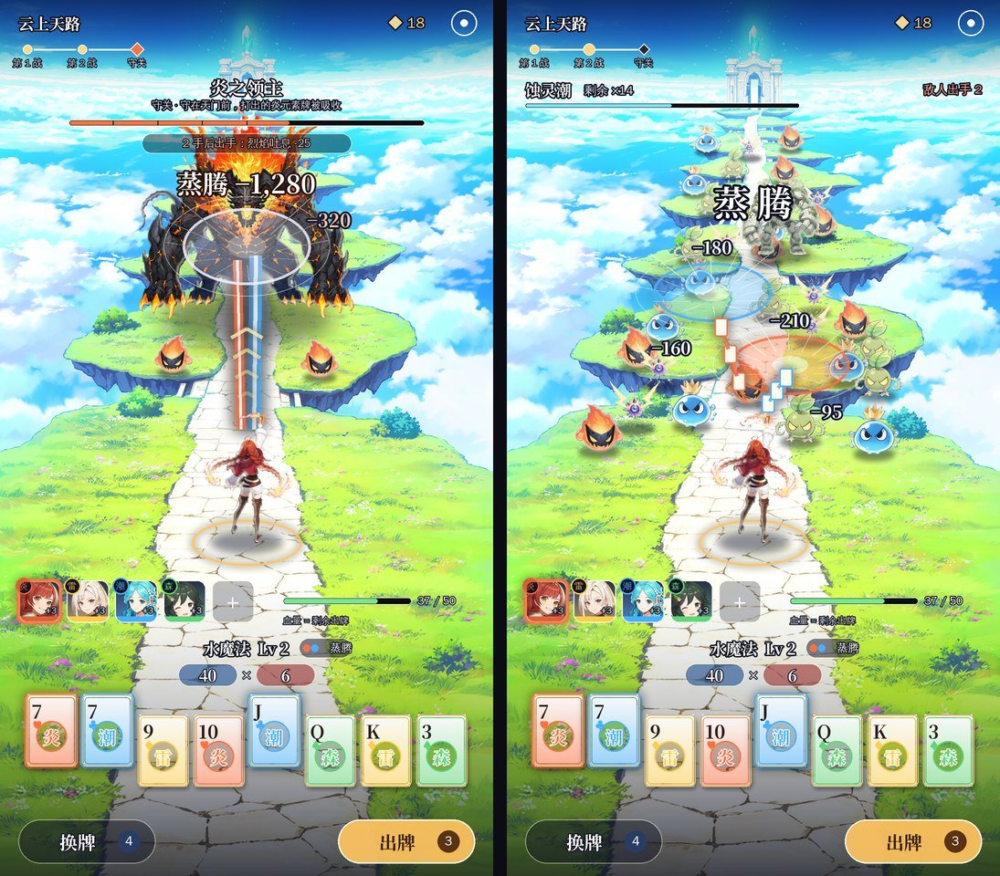
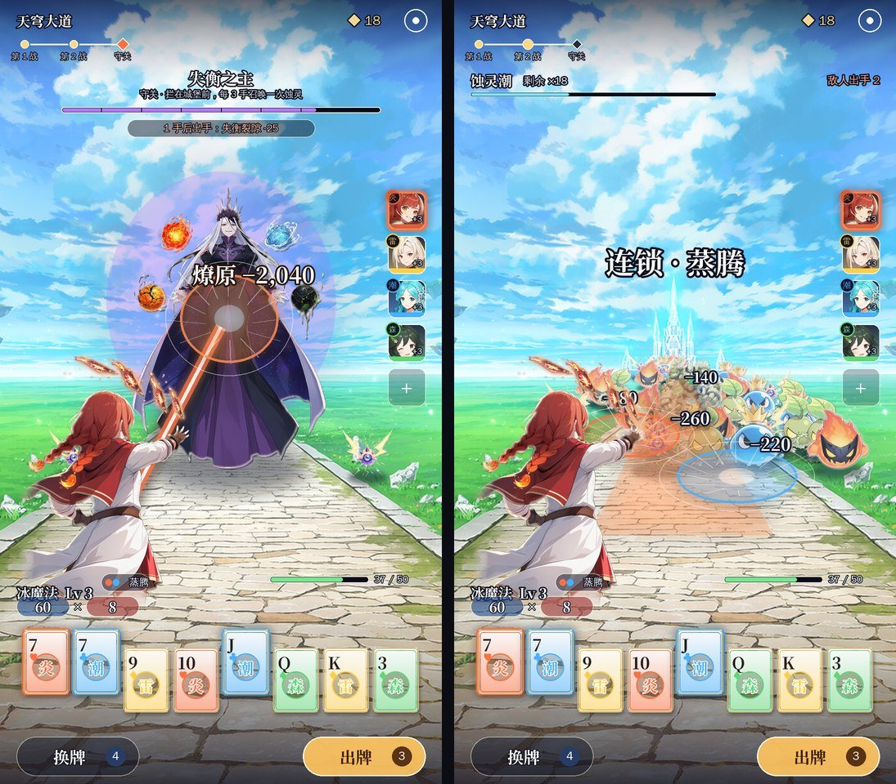

A3 俯视 + 软引导（推荐）：视角和《宗师之上》一样，主角在下方、怪从上方来。场景开阔，不画路，往前的感觉靠下面五种手法：
| 手法 | 怎么做 | 效果图里在哪 |
|---|---|---|
| 远处的地标 | 每段路画面最顶上有一个要去的地方：白塔、瀑布神社、古门 | 三张图的顶端 |
| 地标方向来的光 | 地标那边最亮，往下慢慢变暗；眼睛先看到亮处 | 顶端那团光 |
| 零散的踏脚点 | 松松地连向地标的东西：几块踏石、一串小岛、几颗浮空晶石；不连成路，看起来只是「大概往那边」 | 草甸的踏石、湖上的小岛、枫原的晶石 |
| 往上飘的东西 | 光点、花瓣、落叶往地标方向慢慢飘（游戏里是动的） | 主角身边往上飘的光点 |
| 怪从前面来、主角面朝前 | 怪从地标那边压下来，主角背对镜头、面朝地标；守关首领站在地标前面 | 每张图 |
再加上顶部的关卡进度（第 1 战 → 第 2 战 → 守关），每打完一波，镜头往前推一小段（游戏里加 0.5 秒的推进动画）。




两套共用的界面： - 整屏都是场景，没有横穿屏幕的血条和装备面板。 - 顶部透明：关卡名、关卡进度、源晶、设置。 - 下方三成的高度从透明慢慢过渡到半透明，放伙伴头像牌、血量、元素魔法名、「元素力 × 倍率」、元素牌和按钮。
| 做法 | 现在 | 方案里 |
|---|---|---|
| 站在地上 | 怪是一排排贴在背景前面的 | 每只怪的脚底落在场景的地面上，离得越远越小（俯视视角下远近差得少，越肩视角差得多） |
| 影子 | 没有 | 每只怪脚下都有一块和场景光一个方向的影子 |
| 光线 | 怪自带的颜色和背景不一样 | 怪按场景的光调色（草甸、镜湖偏白偏亮，枫原偏暖），边上加一圈场景光颜色的轮廓光 |
| 远近 | 没有 | 远处的怪往天空色淡一点（空气透视），近处的清楚 |
| 从哪来 | 凭空出现 | 从地标那边压过来：草甸从白塔方向、镜湖从神社方向、枫原从古门方向 |
| 首领和场景 | 和小怪一样贴着 | 首领站在这段路的地标前面（白塔前、古门前） |
| 特效 | 白色飞牌 | 牌的元素色决定光束和圆环的颜色，落在地面上，带透视（圆环压成椭圆） |
这些在游戏里都能做：脚底影子、调色和淡出都是给怪物图片加一层颜色和透明度，NanoVG 本身就支持；地面透视就是按怪物脚底的高度算缩放。v8 实机已经有「按排缩放」，改成按场景的地面算就行。

| 点开：全身立绘 + 技能 | 说明 |
|---|---|
 |
在战斗中点头像牌，整个界面压暗，弹出全身立绘、名字、元素、星级和技能。技能就是一代那件装备的效果（焰绯 = 一代「打出红桃每张倍率 +3」那件）。底下一排头像可以左右切换。 |
| 东西 | 叫法 |
|---|---|
| 牌 | 元素牌（♥ 炎、♦ 雷、♣ 潮、♠ 森） |
| 牌型 | 元素魔法，沿用一代的名字：火魔法（高牌）、水魔法（对子）、风魔法（两对）、土魔法（三条）、冰魔法（顺子）、雷魔法（同花）、光明魔法（葫芦）、黑暗魔法（四条）、时间魔法（同花顺）…… |
| 这一手的花色组合 | 反应名（纯表现，不改分数）：蒸腾、爆燃、燎原、链电、萌发、雷藤 |
| 装备 | 伙伴 |
| v10 A2 云上天路 | v10 B2 天穹大道 |
|---|---|
 |
 |
| 版本 | 内容 | 结果 |
|---|---|---|
| v10 | A2 云上天路（一条路通到天门）/ B2 天穹大道（docs/v2/立项方案_v10.md） |
引导太硬，不一定是一条路 → v11 |
| v9 | 战斗界面三套：A 浮岛祭坛 / B 林间长路 / C 断崖斜阵（docs/v2/立项方案_v9.md） |
A 像开放世界、B 太压抑 → v10 |
| v8 | 《源神：元素牌》题材包装 + 实机换皮（docs/v2/立项方案_v8.md） |
题材定了；战斗界面太乱 → v9 |
| v7 | 扑克地牢（战斗照《吸血鬼爬行者》，实机） | 战斗框架保留 |
| v6 | 调色师（实机切片） | 没有正常战斗的体验 |
| v5 | 乐队 / 调色 / 烟花（概念图） | 选了调色 → v6 |
| v4 | 新怪谈 / 深海 / 地府 | 和玩法不搭、画风低 |
| v3 | 仙门降妖（第一次照《宗师之上》做布局） | 题材不新、页游感 |
| v2 / v1 | 武侠 / 末日 | — |